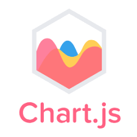

Chart.js est une bibliothèque JavaScript qui permet de créer des graphiques interactifs et personnalisables en HTML5. Elle utilise l’élément <canvas> et fonctionne sur tous les navigateurs modernes.

Un CDN (Content Delivery Network) est un réseau de serveurs répartis dans le monde qui stocke et distribue du contenu (comme des fichiers JavaScript, CSS, images, vidéos) afin d’optimiser la rapidité de chargement des sites web.
Ajoute ce script dans ton fichier HTML :
<script src="https://cdn.jsdelivr.net/npm/chart.js"></script>
npm install chart.js
Télécharge Chart.js ici et ajoute-le à ton projet.
Un graphique Chart.js se compose de 3 éléments :
<canvas> dans le HTMLExemple minimal :
<canvas id="monGraphique"></canvas>
<script>
const ctx = document.getElementById('monGraphique').getContext('2d');
const monGraphique = new Chart(ctx, {
type: 'bar', // Type de graphique
data: {
labels: ['Janvier', 'Février', 'Mars'],
datasets: [{
label: 'Ventes',
data: [30, 45, 60],
backgroundColor: 'blue'
}]
},
options: {
responsive: true
}
});
</script>Chart.js prend en charge plusieurs types de graphiques :
Chart.js permet une grande personnalisation :
backgroundColor: 'rgba(255, 99, 132, 0.5)', // Couleur de remplissage
borderColor: 'rgba(255, 99, 132, 1)', // Couleur des bordures
borderWidth: 2 // Épaisseur de la bordureoptions: {
plugins: {
legend: { display: true, position: 'top' }, // Affichage de la légende
title: { display: true, text: 'Titre du Graphique' } // Titre du graphique
}
}scales: {
y: { beginAtZero: true } // Commencer l'axe Y à 0
}
Si tu veux mettre à jour un graphique sans recharger la page, tu peux utiliser .update() :
monGraphique.data.datasets[0].data = [50, 60, 70]; // Nouvelle valeur
monGraphique.update(); // Rafraîchir le graphiqueChart.js fonctionne avec :
Chart.js Documentation: La documentation officielle est la meilleure ressource pour apprendre Chart.js. Elle fournit des informations détaillées sur toutes les fonctionnalités de la bibliothèque, ainsi que des exemples de code et des tutoriels. Vous pouvez la retrouver ici : https://www.chartjs.org/docs/latest/
OpenClassrooms: Vous trouverez un tutoriel sur l'utilisation de la librairie Chart.js afin d'enrichir vos projets. https://openclassrooms.com/fr/courses/7697016-creez-des-pages-web-dynamiques-avec-javascript/7911250-utilisez-la-librairie-pour-enrichir-votre-projet
YouTube: Il existe de nombreux tutoriels vidéo sur YouTube qui peuvent vous apprendre à utiliser Chart.js. Recherchez simplement "Chart.js tutorial" pour trouver une variété de ressources.
Cours payants: Des plateformes comme Udemy, Coursera et Pluralsight proposent des cours payants sur Chart.js. Ces cours peuvent être une bonne option si vous préférez un apprentissage structuré.
Digicomp: Ce site propose des cours de développement logiciel, dans lesquels vous pouvez retrouver des cours sur le JavaScript. https://www.digicomp.ch/blog/2017/07/07/chart-js-une-evaluation-graphique-des-donnees-en-un-tour-de-main-grace-javascript
Chart.js est un outil puissant et facile à utiliser pour afficher des données visuelles et interactives. Avec un peu de JavaScript, tu peux créer des graphiques dynamiques et personnalisés.